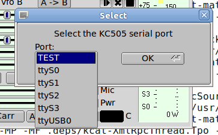
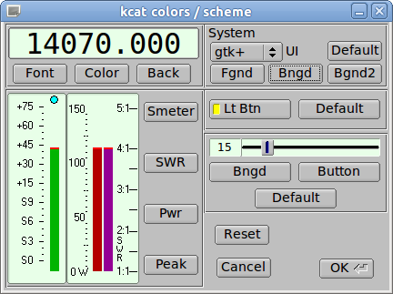
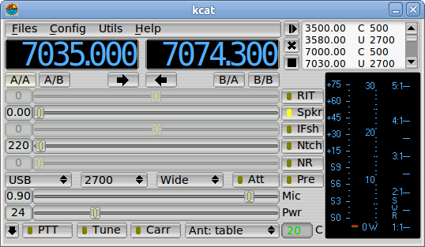
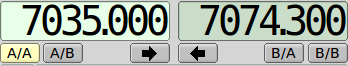
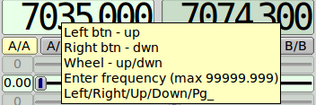
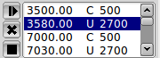
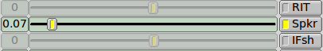
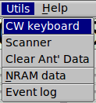
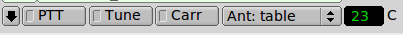
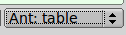

|  |
You will need to select
the serial port to which your transceiver is connected. This
screen capture shows the ports on one of my Linux systems.
Windows would list the COM ports that are installed (and not currently
in use). Select TEST if you want to test drive the program without actually connecting to the 505. If you do select TEST this dialog will appear every time you start the program. The program will attempt to use the last used serial port when starting after a satisfactory operating session. |
|  | The
program allows you to control many aspects of the user interface
including fonts, foreground colors, background colors, lighted button
colors, and the Scheme (general appearance of controls). Here is
an example of a possible set of user choices:  |
| After
you become familiar with the various controls you will probably want to
turn off the tooltips. Uncheck the "Enable tooltips" menu item on
the "Config" menu. |
|

 |
The
frequency display is also a
control. Each numeric is sensitive to mouse left/right buttons
for up/down and to the mouse scroll wheel for rapidly changing
values. Click on any of the numeric segments and you can enter a
new frequency using the keyboard numeric keypad. If you make an
error simply enter a non-numeric key (press the Esc key). Use the
period key to separate the kHz from the Hz value. Set the newly
entered frequency by
pressing the Enter key. The second image shows the tool tip for the frequency control Vfo-A and Vfo-B are separate controls, A on the left, B on the right. When the mouse pointer is over the frequency display you can also change frequency values using the arrow and page key buttons:
|
|
|  |
The active vfo triad can be saved to the vfo list using the button, the selected vfo triad can be deleted from the list using the button, and all of the entries can be deleted using the button |
|
|  |
The
buttons that have a light box are toggles - activated when the lighted
box is colored.
Some of these are linked to a slider. If the button state is
inactive then that associated slider will be greyed out. In the
example the volume control is active and the RIT and IF shift controls
are
inactive. The volume slider will be greyed out when the Spkr
button is not illuminated. Sliders can also be adjusted using the mouse
wheel when the mouse cursor is over the intended control. |
|
|  |
CW Keyboard Open the CW Keyboard from the Utils Menu. |
|
|
Connecting kcat to fldigi Xmlrpc is used via a local socket device for the two programs to communicate. fldigi acts as the server and kcat the client. There is no requirement for start / stop ordering of the programs. Your local firewall should be set up to allow fldigi access to the 127.0.0.1 socket address. kcat sends rig configuration data to fldigi when the two programs initially recognize each other. This data is used to populate the rig name, the available modes and the available bandwidths. After this initial communications the operator can set the paired controls from either fldigi or kcat. The two programs will remain sychronized. PTT can be activated at kcat or using the T/R button on fldigi. fldigi also engages the PTT via the macro <TX> <RX> tags. When operating digital modes with fldigi you need to use the PTT from fldigi. |
|
|  |
Additional Controls Access to additional controls is obtained by pressing the down-arrow button. |
|
|  |
Antenna Ports You can set the antenna combinations of A/B, Rx/Tx to be used with various frequency bands. The menu item Config / Antenna Ports provides access to the set up dialog. You can also over ride those settings by choosing from the Ant: table pick list. details on antenna port selection and setup |